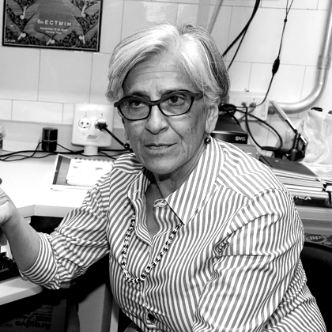

OUR GOAL
To provide comprehensive knowledge and data on arboviruses user-friendly, open-access platform
Collaborate with usTo provide comprehensive knowledge and data on arboviruses user-friendly, open-access platform
Collaborate with usWe have synthesized a century of arbovirus research into an interactive resource, integrating global knowledge and data visualizations within a broad ecological context
Summary information on arboviruses and their associated diseases
Concise information on arthropod vectors that transmit arboviruses
Interactive, high-resolution maps to investigate arboviruses in an ecological context
Comprehensive datasets connecting arboviruses, vectors, and ecological factors
